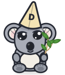

إذا كنت من النوع من الأشخاص الي يحب تكون عنده سيطرة كاملة على كل جزئية من حياته... فمنصة أولفانا تناسبك.
أنت تحدد ماذا ترى
لأننا نؤمن أن الطالب أيضاً يحتاج أن تكون عنده السيطرة الكاملة على تجربته التعليمية.
بمنصة أولفانا، أنت لا تشاهد محتوى عشوائي، أنت تحدد ماذا تريد أن ترى، وما يناسبك.
ما يناسبك أنت
في منصة أولفانا، كل المنشورات الي توصلك، أنت عندك تحكم كامل عليهن.
أنت تختار اهتماماتك، مرحلتك الدراسية، والمحتوى الذي يناسبك، حتى تكون تجربتك داخل المنصة أقرب لك.
لماذا أولفانا؟
كل لحظة بشغلنا اشتغلناها كانت مرافقة لايمان واحد:
أن الطالب يحتاج إلى تجربة مختلفة.
مصممة حول احتياجاتك
نحن لا نريد أن نبني مجرد منصة طلابية ثانية، بل نريد أن نبني منتج يفهم المستخدم ويكون مصمم حول احتياجاته.
لأننا نؤمن أن التعليم لا يجب أن يكون تجربة واحدة للجميع.

طريقتك
هدفكنفكّر بطريقة مختلفة
إحنا نؤمن بالتفكير بطريقة مختلفة، وأن منتجنا لازم يكون مختلف.
الاختلاف بالنسبة لنا ليس فقط بإضافة ميزات أكثر، وإنما بطريقة تصميم التجربة نفسها.
نريد أن يشعر الطالب أن المنصة صممت من أجله هو.
أرومة
جمال. سهولة. ملاءمة.
الطريقة الي راح ندخل بيها للسوق هي عن طريق جعل منتجنا:
• مصمم بطريقة جميلة.
• سهل الاستخدام.
• مناسب للمستخدمين.
لأننا نؤمن أن أفضل التقنيات هي التي تكون بسيطة وقريبة من المستخدم.
خلف التجربة
خلف هذه التجربة يوجد نظام ذكاء اصطناعي يعتمد على تقنية RAG.
تبدأ الرحلة بما تريد فهمه.
رسم توضيحي · اضغط على أي مرحلةمعرفة من مصادرك
الفكرة من هذه التقنية هي أن النظام لا يعتمد على إجابات عامة فقط، بل يستطيع فهم واسترجاع المعلومات من المصادر التعليمية المرتبطة بالطالب.
حتى يحصل الطالب على إجابات أكثر ارتباطاً بما يدرسه.
الحاسبات الصغيرة
المكتبة الناطقة
لكن هدفنا لم يكن بناء تقنية فقط.
هدفنا هو استخدام هذه التقنية حتى نجعل التعلم:
• أسهل.
• أسرع.
• وأكثر ارتباطاً بالطالب.
المصدر الأقرب، أولًا
ولأننا نؤمن أن الأفكار وحدها لا تكفي، قمنا ببناء واختبار النظام بشكل عملي.
إلى المركز الأول
67 سؤالًا نفسها · الكتاب والصفحة الصحيحان · اختبار استرجاع محفوظ
من التطوير إلى التحسين
هذه الأرقام تمثل رحلة طويلة من التطوير والتحسين حتى نصل إلى تجربة تعليمية يمكن الاعتماد عليها.
Gemma 3 4B · 125 سؤالًا صالحًا للتحكيم · أولفانا تشمل الكتب والويب
الطالب هو المحور
في النهاية، أولفانا ليست مجرد منصة طلابية.
هي محاولة لبناء تجربة تعليمية مختلفة، يكون الطالب فيها هو محور كل شيء.
لأننا نؤمن أن مستقبل التعليم ليس فقط في الوصول إلى معلومات أكثر...
بل في جعل الحصول على المعرفة اسهل لكل طالب.